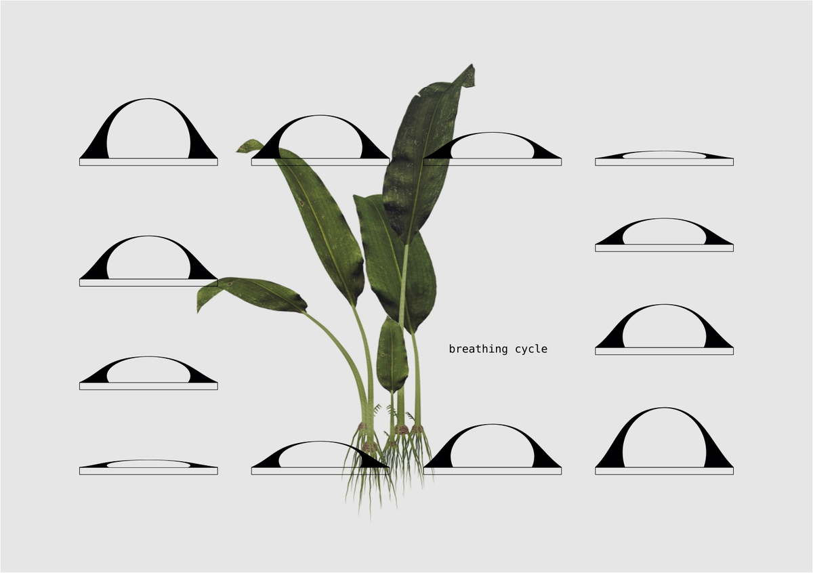
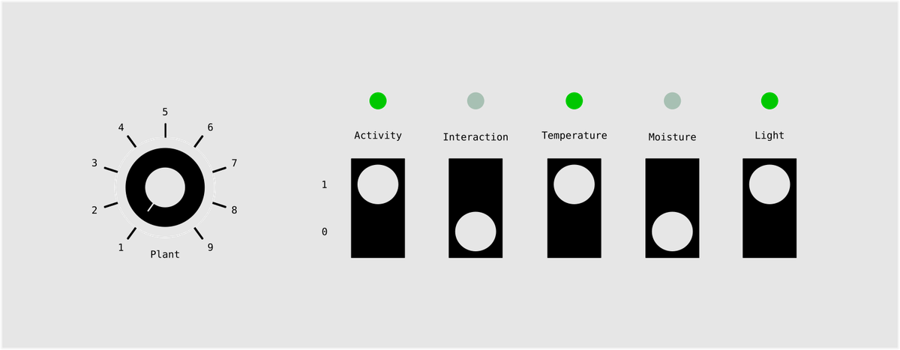
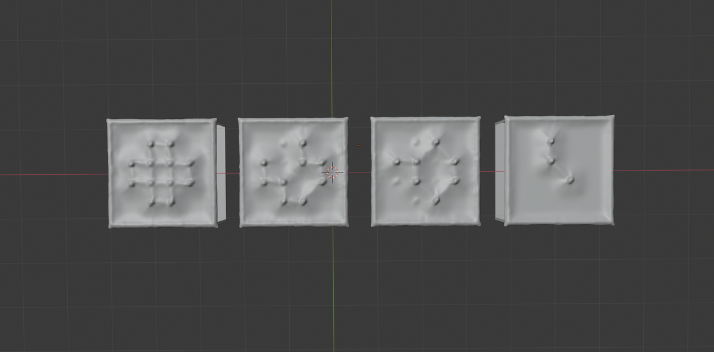
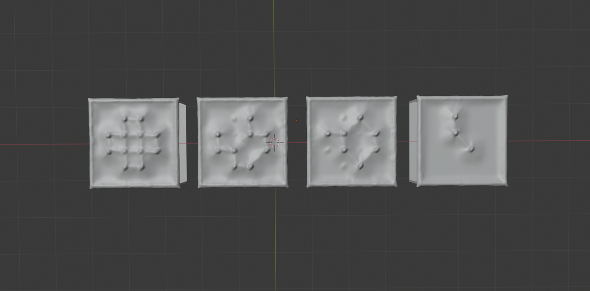
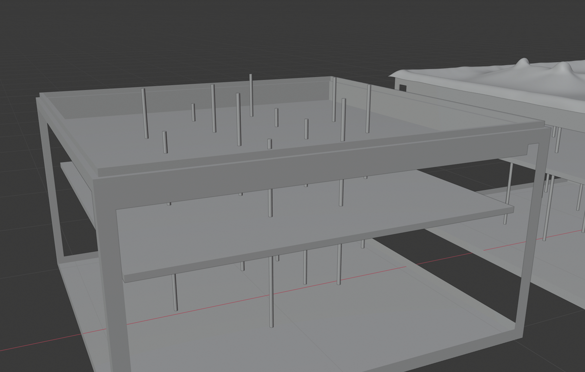
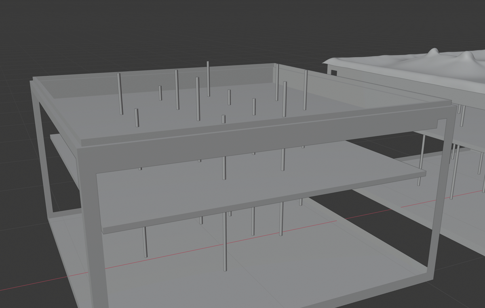
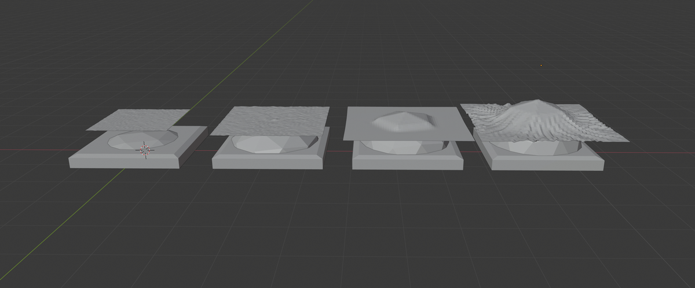
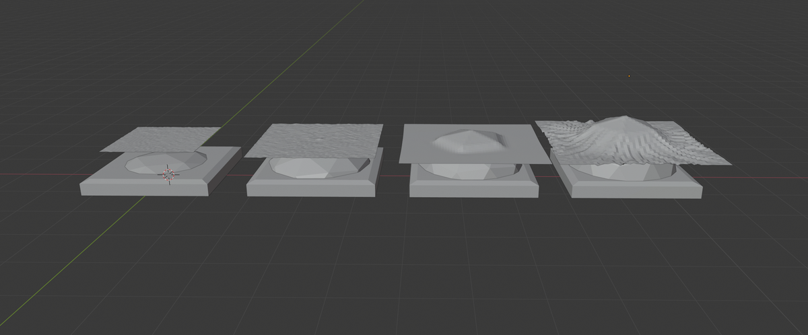

Principles
This project convert the data of a plant and its environment into a an installation which aims to invite us to get closer to nature and to observe how plants live and re/act.
Represent the health and activity of the plant
A portable device collects and analyzes light, air temperature and soil moisture level in a plant's environment, as well as its electrical activity.
These values will allow the device to determine how the plant is feeling, according to its needs and whether it is satisfied or not.
The device mimics the mechanisms and movements of the respiration, because it is a very common process between plants and animals, to represent the health and activity of the plant. For example, a plant that is in a good environment "breathes" slowly and deeply, and a plant that is in danger "breathes" briefly and jerky.

Interact with the living
A touché sensor, or at least a calibrated capacitive sensor, will allow the device to sense a human-plant interaction and to reveal its nature.
- Is it a caress, a strike or a caring touch?
- What does a plant feels when we touch it?
- What do we feel when we touch them?
Play with a modular system
A device is composed by two items. One is the plant, capturing data, linked to a plant. The other one is the clone, showing the health and activity of the plant.
Data type
- Light level
- Air temperature level
- Soil moisture level
- Plant's electrical activity
- Plant-human interaction
Communication
On the plant, one can choose the communication channel (between 1 and 5) which will be used to send the data to the clone.
On the clone, one can choose its communication channel and the types of data that are used to represent the health and activity of the plant.
plant 01sendlight,temperatureandinteractiontoclone 01plant 02sendactivityandmoisturetoclone 02.plant 03sendinteractiontoclone 03

This kind of configuration allows to build any kind of networks, with several plants and tailor-made visualizations. One plant can be linked to several clones, and vice-versa.
The panel
The panel, a wooden structure designed to assemble modules together, can hosts up to 5 clones, creating a more detailed installation that facilitates the understanding of the captured values.
Public
- Massively used in a large room and re-creating a space forest, it invites an audience to interact with plants and clones
- A device plugged to an houseplant, acting as a companion in the everyday life
Two possibilities
Mechanical system
My first idea was to have a mechanical system that pushes rods on a flexible material in order to deform it and give it a unique shape according to the sensations of the plant.
 

I like this solution because I can easily imagine having total control, mastering the speed / movement ratio of the rods and therefore the shape of the clone.
 

But this solution requires a lot of material to be produced, and it will be too expensive compared to the idea that I have of it. I want to build something as affordable and easy to assemble as possible, to make sure it reaches a large audience.
Inflatable system
The other system I have in mind uses air pressure to inflate or deflate a flexible bag. This replaces the need for ± 12 motors with a single solenoid and an air pump. The control of the final shape is reduced but also the technical barrier, which is a good point. In addition, the movement should be more organic.
 
